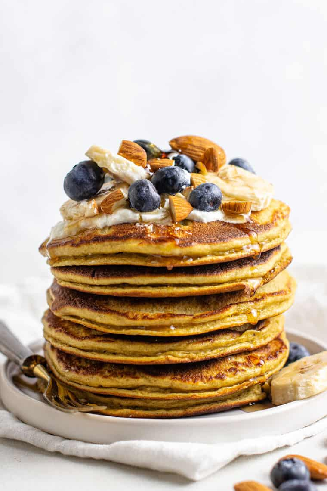

Protein Pancakes

Description
Up your protein with these pancakes made with eggs, oats, milk and protein powder. A great breakfast after a workout, enjoy with nut butter or fruit.
Ingredients
- 1 banana
- 75g oats
- 3 large eggs
- 2 tbsp milk (dairy, soya, oat or nut milks all work)
- 1 tbsp baking powder
- pinch of cinnamon
- 2 tbsp protein powder (whey, pea or whatever your preference)
- coconut oil, or a flavorless oil, for frying
- nut butter, maple syrup and berries or sliced banana to serve
Steps
- Whizz the banana, oats, eggs, milk, baking powder, cinnamon and protein powder in a blender for 1-2 mins until smooth. Check the oats have broken down, if not, blend for another minute.
- Heat a drizzle of oil in a pan. Pour or ladle in 2-3 rounds of batter, leaving a little space between each to spread. Cook for 1-2 minutes, until bubbles start to appear on the surface and the underside is golden. Flip over and cook for another minute until cooked through. Transfer to a warmed oven and repeat with the remaining batter. Serve in stacks with nut butter, maple syrup and fruit.
Nutrition: Per serving (2)
- kcal: 437
- fat: 16g
- saturates: 4g
- carbs: 39g
- sugars: 9g
- fibre: 4g
- protein: 31g
- salt: 1.4g
You may also like: Egg Wraps, Spinach Chicken
Back to homepage